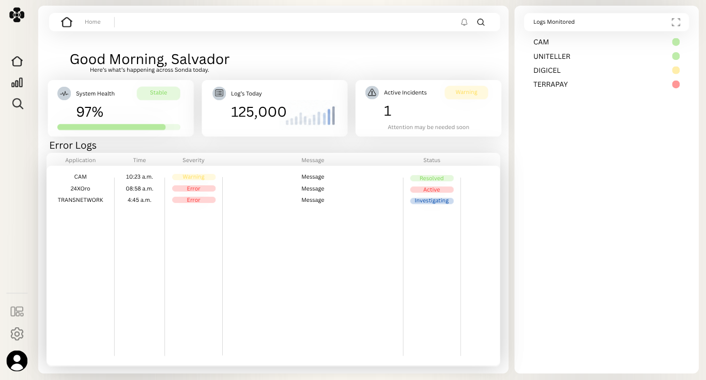

Approved reference: Canva Sans

Original supplied Home image, displayed at native scale. No font extracted.
Proposed candidate: Inter Regular
Good Morning, Salvador
Here’s what’s happening across Sonda today.
Same measured greeting size, regular weight and line height. Different glyph shapes/widths remain; this is a candidate for approval, not an exact match.